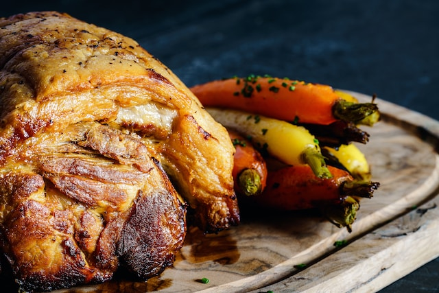

Ingredients
Let's Cook
- ¼ cup pomegranate molasses
- 4 cloves garlic, minced
- 1 tablespoon chopped fresh rosemary
- 1 tablespoon kosher salt
- 2 teaspoons freshly ground black pepper
- 1 teaspoon Aleppo pepper
- 1 teaspoon dried mint
- 1 teaspoon ground cumin
- 1 (5 pound) boneless leg of lamb, butterflied
- kitchen twine
- salt to taste
- 1 tablespoon pomegranate molasses, or as needed

Directions
Step 1 Stir together 1/4 cup pomegranate molasses, garlic, rosemary, salt, black pepper, Aleppo pepper, mint, and cumin in a bowl until combined. Set aside.
Step 2 Lay lamb, fatty-side up, on a work surface. Cut 2 deep slashes in each fleshy end. Flip lamb and cut 10 to 20 shallow slashes across the surface of the fat.
Step 3 Spread 3/4 of the pomegranate molasses mixture over the flesh-side of lamb. Fold meat together and place into a large bowl. Spread remaining pomegranate molasses mixture over the fatty-side of lamb. Cover the bowl with plastic wrap and refrigerate for 8 hours to overnight.
Step 4 Preheat the oven to 350 degrees F (175 degrees C). Place a roasting rack in the bottom of a roasting pan.
Step 5 Remove lamb from marinade and discard excess marinade. Place lamb, fatty-side up, on a work surface. Tie the center section of lamb with kitchen twine to cinch roast together. Repeat ties four times along the length of roast.
Step 6 Season lamb with salt and place on the roasting rack in the prepared pan. Pour water below the rack to cover the bottom of the pan.
Step 7 Roast in the preheated oven until hot and slightly pink in the center, about 1 hour 45 minutes. An instant-read thermometer inserted into the center should read at least 135 degrees F (57 degrees C). Rest lamb for 15 minutes, then transfer to a plate and brush with remaining 1 tablespoon pomegranate molasses.